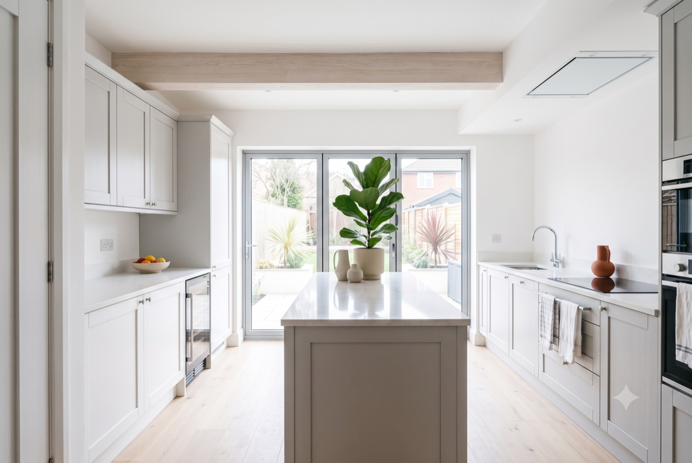

Portfolio-first proof
Large project imagery, transformation stories and useful context replace generic quality claims.
Independent concept project · Residential design & build
A fictional design-and-build brand created by Akari to demonstrate how project quality, process clarity and homeowner trust can become one coherent digital experience.
The project thesis
A homeowner considering a significant renovation is not browsing casually. They are checking whether a business feels capable, trustworthy and clear about what happens next.
Ashworth & Vale turns those questions into the site’s structure. Finished work creates desire; process and practical content reduce risk; the enquiry path arrives only after the site has earned it.
The customer decision
What does this company do, where does it work and does it feel credible?
Does the project quality match the standard I want for my own home?
Can this team manage cost, communication, disruption and delivery?
What happens if I make contact, and will the conversation be useful?
Look beneath the surface
Move between the finished expression, the customer question and the reusable design logic behind it.
Choose a view to explore what visitors see, why it works, and what Akari can reuse.

What the visitor experiences
A clear portfolio, useful filters and project detail allow homeowners to evaluate quality without fighting through generic company claims.
 Persistent orientation
Proof beside explanation
Persistent orientation
Proof beside explanation
Why it works this way
Navigation keeps the visitor oriented, while each service is paired with practical evidence and an appropriate next step.
What Akari can reuse
Every page establishes context, develops the customer’s understanding, creates one memorable proof moment and resolves with a useful action.
Three decisive moves
Large project imagery, transformation stories and useful context replace generic quality claims.
The architectural drawing develops with each stage, turning an abstract process into visible progress.
Filters, comparison and active states help visitors evaluate—not merely admire—the work.
A first-class content type
The before/after interaction makes transformation tangible while remaining keyboard-operable and understandable without animation.


Restraint is part of the design
No scroll hijacking. No unfamiliar navigation. No constant animation. No luxury language that could belong to any building company.
The site uses one meaningful interaction per page and keeps the full reading experience available without JavaScript or motion.
What this means for your business
A cleaning company should not look like Ashworth & Vale. A property manager should not behave like one either. Akari applies the same discipline to the questions your customers actually ask.